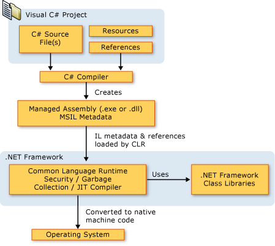

C# - Overview
C# is an elegant and type-safe object-oriented language that enables developers to build a variety of secure and robust applications that run on the .NET Framework. You can use C# to create Windows client applications, XML Web services, distributed components, client-server applications, database applications, and much, much more. Visual C# provides an advanced code editor, convenient user interface designers, integrated debugger, and many other tools to make it easier to develop applications based on the C# language and the .NET Framework.+
The Visual C# documentation assumes that you have an understanding of basic programming concepts. If you are a complete beginner, you might want to explore Visual C# Express, which is available on the Web. You can also take advantage of books and Web resources about C# to learn practical programming skills.
C# Language
C# syntax is highly expressive, yet it is also simple and easy to learn. The curly-brace syntax of C# will be instantly recognizable to anyone familiar with C, C++ or Java. Developers who know any of these languages are typically able to begin to work productively in C# within a very short time. C# syntax simplifies many of the complexities of C++ and provides powerful features such as nullable value types, enumerations, delegates, lambda expressions and direct memory access, which are not found in Java. C# supports generic methods and types, which provide increased type safety and performance, and iterators, which enable implementers of collection classes to define custom iteration behaviors that are simple to use by client code. Language-Integrated Query (LINQ) expressions make the strongly-typed query a first-class language construct.2
As an object-oriented language, C# supports the concepts of encapsulation, inheritance, and polymorphism. All variables and methods, including the Main method, the application's entry point, are encapsulated within class definitions. A class may inherit directly from one parent class, but it may implement any number of interfaces. Methods that override virtual methods in a parent class require the override keyword as a way to avoid accidental redefinition. In C#, a struct is like a lightweight class; it is a stack-allocated type that can implement interfaces but does not support inheritance.
In addition to these basic object-oriented principles, C# makes it easy to develop software components through several innovative language constructs, including the following:
· Encapsulated method signatures called delegates, which enable type-safe event notifications.
· Properties, which serve as accessors for private member variables.
· Attributes, which provide declarative metadata about types at run time.
· Inline XML documentation comments.
· Language-Integrated Query (LINQ) which provides built-in query capabilities across a variety of data sources.
If you have to interact with other Windows software such as COM objects or native Win32 DLLs, you can do this in C# through a process called "Interop." Interop enables C# programs to do almost anything that a native C++ application can do. C# even supports pointers and the concept of "unsafe" code for those cases in which direct memory access is absolutely critical.
The C# build process is simple compared to C and C++ and more flexible than in Java. There are no separate header files, and no requirement that methods and types be declared in a particular order. A C# source file may define any number of classes, structs, interfaces, and events.
.NET Framework Platform Architecture
C# programs run on the .NET Framework, an integral component of Windows that includes a virtual execution system called the common language runtime (CLR) and a unified set of class libraries. The CLR is the commercial implementation by Microsoft of the common language infrastructure (CLI), an international standard that is the basis for creating execution and development environments in which languages and libraries work together seamlessly.
Source code written in C# is compiled into an intermediate language (IL) that conforms to the CLI specification. The IL code and resources, such as bitmaps and strings, are stored on disk in an executable file called an assembly, typically with an extension of .exe or .dll. An assembly contains a manifest that provides information about the assembly's types, version, culture, and security requirements.
When the C# program is executed, the assembly is loaded into the CLR, which might take various actions based on the information in the manifest. Then, if the security requirements are met, the CLR performs just in time (JIT) compilation to convert the IL code to native machine instructions. The CLR also provides other services related to automatic garbage collection, exception handling, and resource management. Code that is executed by the CLR is sometimes referred to as "managed code," in contrast to "unmanaged code" which is compiled into native machine language that targets a specific system. The following diagram illustrates the compile-time and run-time relationships of C# source code files, the .NET Framework class libraries, assemblies, and the CLR.

Language interoperability is a key feature of the .NET Framework. Because the IL code produced by the C# compiler conforms to the Common Type Specification (CTS), IL code generated from C# can interact with code that was generated from the .NET versions of Visual Basic, Visual C++, or any of more than 20 other CTS-compliant languages. A single assembly may contain multiple modules written in different .NET languages, and the types can reference each other just as if they were written in the same language.
In addition to the run time services, the .NET Framework also includes an extensive library of over 4000 classes organized into namespaces that provide a wide variety of useful functionality for everything from file input and output to string manipulation to XML parsing, to Windows Forms controls. The typical C# application uses the .NET Framework class library extensively to handle common "plumbing" chores.
Strong Programming Features of C#
Although C# constructs closely follow traditional high-level languages, C and C++ and being an object-oriented programming language. It has strong resemblance with Java, it has numerous strong programming features that make it endearing to a number of programmers worldwide.
Following is the list of few important features of C#: